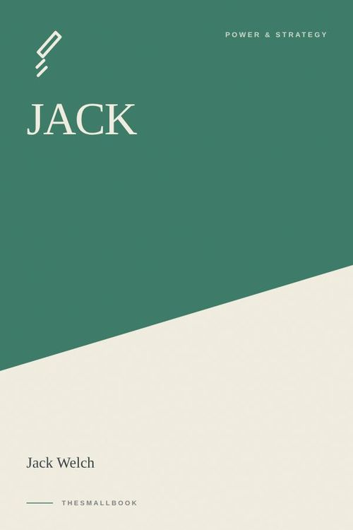

Library › Authors › Jack Welch
Books by Jack Welch
Jack Welch has one book in the library. Every book here is read down to the big idea, the lessons, the lines worth keeping and the actions worth taking. Start with the summary, then buy the full book if it earns a place on your shelf.

Jack: Straight from the Gut
2001 · 12 min · 8 lessons
Jack Welch's memoir of transforming GE: fixing-or-killing businesses, boundaryless culture, Six Sigma, and the succession decision whose shadow is the linked case study.
Welch's GE tenure (1981-2001) is the most studied CEO run in history, told here in his own voice: the chemical engineer who fought bureaucracy, fired a third of the workforce ('Neutron Jack'), imposed the #1-or-#2 rule (fix, sell or close any business not leading its market), built Crotonville into leadership's West Point, ran Work-Out town halls, pushed 'boundaryless' behavior, adopted Six Sigma late but huge, and grew GE Capital into the group's profit engine. The vitality curve (top 20, middle 70, bottom 10,...
Lessons in the summary
- Number One or Number Two, or Exit
- Candor Is a System, Not a Personality
- Differentiation: Reward the Top, Tell the Bottom the Truth
- Grow Leaders Faster Than Businesses
- Adopt Best Practice Late but Totally
- Finance Can Eat the Company
- Succession Is the CEO's Final Exam, and Horses Are Not Benchmarks
- Face Reality, Including Your Own Legacy
Lines worth keeping
- Fix it, sell it, or close it.
- Before you are a leader, success is all about growing yourself. When you become a leader, success is all about growing others.
- Face reality as it is, not as it was or as you wish it were.
Questions Jack Welch helps answer
Read nearby authors next
- Amish Tripathi 6 books
- Robert Greene 6 books
- Devdutt Pattanaik 5 books
- Nassim Nicholas Taleb 4 books
- Radhakrishnan Pillai 3 books
- Sanjeev Sanyal 3 books
- Simon Sinek 3 books
- Al Ries & Jack Trout 2 books
Questions Jack Welch helps answer
Where should I start with Jack Welch? Start with Jack: Straight from the Gut: Jack Welch's memoir of transforming GE: fixing-or-killing businesses, boundaryless culture, Six Sigma, and the succession decision whose shadow is the linked case study.